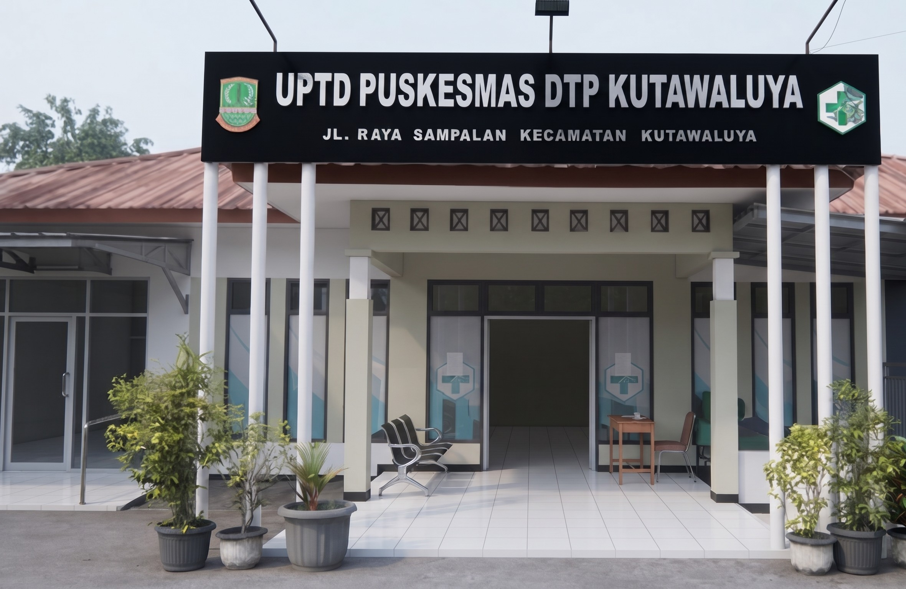

Melayani dengan Sepenuh Hati untuk Mewujudkan Masyarakat yang Sehat dan Berkualitas.

Informasi kesehatan dan pengumuman pelayanan terbaru untuk masyarakat.
Ikuti kegiatan kesehatan Puskesmas di wilayah Anda.
Statistik pelayanan kesehatan sebagai bentuk keterbukaan informasi kepada masyarakat.
Jumlah kunjungan pasien
Diagnosis terbanyak dalam 6 bulan terakhir.